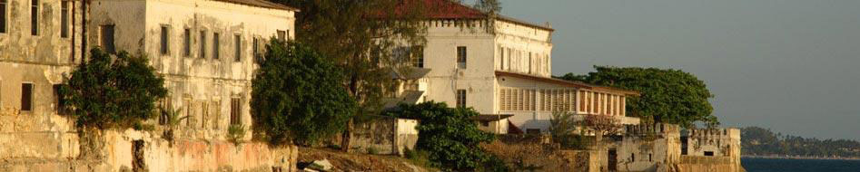
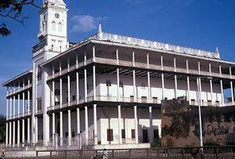
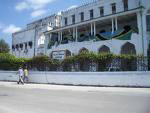
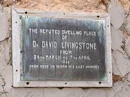

City Tour

Steeped in history, Stone Town in Zanzibar was once the biggest business center of East Africa. In it’s earlier days it was the hub for trading ivory, spices and slaves. Power has changed hands numerous times over the years; the Portuguese, Arabs, Sultans of Oman and English have all had their influence on this unique and fascinating town which has created an incredible mix of architecture and culture.
Stowntown is an UNESCO heritage site and during the tour you will witness a wide variety of sights, smells and sounds. Included in the tour is:

The House of Wonders – Is a very large square shaped building, with several stories, surrounded by ties of Sultan Barghash and was the one in Zanzibar to have electricity light and electric lift. Not surprisingly when it was built, the local people called Bait el Ajab which means House of wonders today.
 The Palace Museum – Is a large white building with castellated battlements and was build in the late 1890’s for member of the Sultan family. Visitors can see much of the sultan furniture’s and other possession that served revolution,
Dr Livingston’s House (who was pivotal in ending the slave trade) It was built around 1860 by Sultan Majid and was used by many of missionaries and explores as a starting point. Dr Livingston lived in that house before commencing his last journey to the mainland.